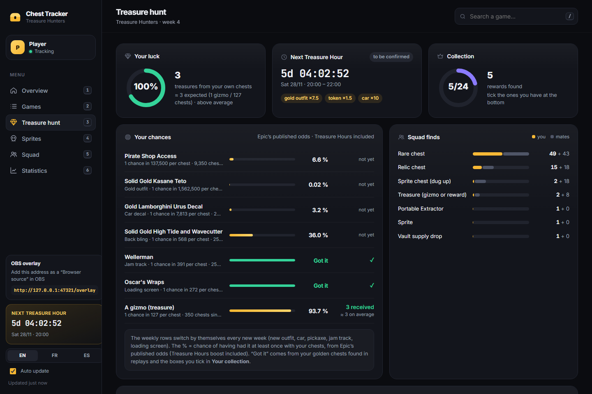

Count every chest you open in Fortnite
A free Windows app that reads the replays Fortnite saves on your PC and counts the chests you opened or broke, game after game. With your Treasure Hunters odds, a sprites collection tracker, squad stats and a live OBS counter.

Everything you need, nothing you don't
At first start you pick the features you want. The dashboard only shows those.
Exact chest counter
Normal, rare, relic, buried sprite chests and wanted-poster chests. The replay says who searched and who broke each chest, so only yours are counted.
Treasure Hunters odds
Your chance of having found the Pirate Shop Access token and each weekly gold reward, from Epic's published odds (Treasure Hours boost included).
Sprites collection
Every sprite and variant (normal, cursed, fortune, gold) in one table. Click the ones you own, crown the ones you mastered.
Squad stats
Your regular mates, games together, wins and what each of them finds.
Detailed stats
Charts, chest types, stats by mode, best days and hours, records, chest calendar and goals.
OBS overlay
A live chest counter for your stream: add one address as a Browser source.

Install in 2 minutes
- Download the zip and unzip it anywhere.
- Double-click
FortniteChestTracker.exe, type your Fortnite name and pick your features. - Turn on replays in Fortnite: Settings → Game → Replays → Record Replays ON.
- Play. About 20 seconds after each game, your chests are added to your dashboard.
FAQ
How do I know how many chests I opened in Fortnite?
Fortnite does not show it. Fortnite Chest Tracker reads the replay of each game and counts the chests your character searched or broke, then adds them up in a local dashboard.
Is it allowed? Can I get banned?
The app never touches the game: it only reads the replay files Fortnite already saves on your PC, after the game. Nothing is injected and no account is needed.
Does it work with Zero Build, squads and Reload?
Yes, any mode that saves a replay. For squads, also turn on Record Large Team Replays.
What are my odds of getting the Pirate Shop Access token?
The app uses Epic's published odds (1 in 137,500 per chest) and your real chest count to show your chance of having found it, plus the odds for each weekly gold reward.
Can I track my sprites collection?
Yes. The Sprites tab lists every sprite with its cursed, fortune and gold variants. Tick the ones you own and mark the ones you mastered.
Is it free? Mac or console?
Free and open source (MIT). Windows only, because it reads the replays saved by Fortnite on PC.